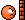

114 posts · 3901 views · started 2016-02-18 16:48 UTC
PO
PowerSerg
2016-02-18 16:48 UTC
#1
So in the comments section of the kickstarter yesterday I asked about the representation of the LGBT+ community in the SOTM universe. What we managed to dig up was awesome
Tachyon and Dr. Medico both like the same gender
Tempest is Agender with no pronoun prefrence
Argent Adapt is asexual
Is there anyone I'm missing, anyone you head canon as also being some form of LGBT? While were at it any kind of LGBT+ representation you would like in the future of this universe (even if were at the end of the multiverse)?
CR
Craig
2016-02-18 17:09 UTC
#2
I've always enjoyed this aspect of the diversity in Sentinel Comics. I do wish we had a transgender character, as well, but that's not something that exists yet.
Also, there's no knowledge of any bisexual folks in Sentinel Comics. I suppose nearly anyone could be, but it would be nice to know.
PO
PowerSerg
2016-02-18 17:20 UTC
#3
I'm actually gender fluid so I'd adore any kind of trans representation as well. More so since that would make Sentinel's of the Multiverse one of the first people releasing major super hero content to include a transgender hero.
Yah I am not aware of anyone being Bi, I sort of just assume everyone is until stated other wise XD.
AL
Arcanist_Lupus
2016-02-18 17:25 UTC
#4
I wouldn’t be surprised if La Capitan has experimented a bit. I feel like a time traveling pirate wouldn’t be concerned with pretty social disapproval.
FO
Foote
2016-02-18 17:26 UTC
#5
I was about to come in with the "this all is kinda old news" deal, but then I saw you just joined the forums. Well, in that case, Welcome!
Diversity in cast and background has always been a major strong suit of SotM.
Glad to have you around!
CR
Craig
2016-02-18 17:38 UTC
#6
Paizo has introduced at least one openly trans character for Pathfinder, but I know that's not a superhero in the "traditional" sense. There just isn't much in the mainstream yet.
PO
PowerSerg
2016-02-18 17:41 UTC
#7
I could totally see La Capitan as being Bi getting around throughout time. It seems to fit her really well.
Yah Paizo is pretty good about diversity in general too, they seem to have that as an company policy right now. If pathfinder didn't cost so much I'd be all about it.
CR
Craig
2016-02-18 17:43 UTC
#8
Captain Jack Harkness-style
DP
dpt
2016-02-18 18:16 UTC
#9
Surely Tempest is relevant in the discussion of trans characters? I know they're not gender-variant in their own race, but they don't fit the human gender binary. For a fun time, read Tempest's bio in the rulebook, which carefully avoids all pronouns. Adam clarified recently that Tempest doesn't carry personally what pronouns you use in referring to them.
(I used plural pronouns for Tempest, cause that's what I do. Like I said, Tempest doesn't care.)
BS
Belle_Sorciere
2016-02-18 18:26 UTC
#10
There was a superhero who was a transgender woman in Aberrant (White Wolf RPG). Also, Coagula in Doom Patrol was a transgender woman. Then there are supporting characters in Batgirl (Alysia Yeoh?) and Angela (don't know her name). Not very many, though.
Re plural pronouns: Singular they is totally grammatically valid, Shakespeare and Chaucer would agree.
UX
UXM266
2016-02-18 18:40 UTC
#11
No one mentioning Omnitron-X? Does it count? Or is it being a robot irrelevent?
Please note that the use of IT is coming from it's Sentinels page
UXM266: I normally don't count robots towards this just because they are robots.
Guise is more or less deadpool so Omnisexual or pansexual .
EV
EvanDan55
2016-02-18 19:52 UTC
#15
I'm always happy they were able to Envision these cool characters to represent the LGBT community. One of my favorite parts of the game.
SI
Silverleaf
2016-02-18 20:04 UTC
#16
I love you.
BR
Braithwhite
2016-02-18 20:05 UTC
#17
Be careful! I've heard that if you speak his name three times, he will appear and explain things at you.
FO
Foote
2016-02-18 20:09 UTC
#18
Great. Thanks Braith. Now I have to clean the coffee off my decks that shot from my mouth when reading this
SI
Silverleaf
2016-02-18 20:15 UTC
#19
How did you get decks to shoot from your mouth?
PO
PowerSerg
2016-02-18 20:21 UTC
#20
Yah it's an awesome part of the game for sure.
FO
Foote
2016-02-18 20:23 UTC
#21
It's a fairly poorly worded (and spelled) sentense isn't it?
SI
Silverleaf
2016-02-18 20:27 UTC
#22
It made me laugh.
EV
EvanDan55
2016-02-18 20:38 UTC
#23
I know.
AL
Arcanist_Lupus
2016-02-18 21:38 UTC
#24
And it's been said before in other friends, but the other great thing about Sentinels comics is that while they do include all these diverse characters, they also mostly don't mention it. I mean, it's relevant to them as characters, but it's not relavent to them as superheroes. Tachyon's wife isn't mentioned in her bio just as Legacy's wife isn't mentioned in his. Dr. Medico's partner is only mentioned because they adopted Idealist. Anthony Drake is asexual, but the only reason we know that at all is Word of God. And the only characters with mentioned opposite sex partners are Wraith and AZ, because those partners are part of their origin stories.
BS
Belle_Sorciere
2016-02-18 22:09 UTC
#25
Have I ever mentioned I encountered this guy on another forum? When I first signed up here and saw his name in some of the threads I was all "Damnit, no." Until I realized he wasn't still here at least.
BS
Belle_Sorciere
2016-02-18 22:16 UTC
#26
I would argue that these things need to be mentioned, and representation is mitigated when they are not. Like it is totally irrelevant that Dumbledore was gay because nothing in the books (or really, nothing beyond JK Rowling's word on the topic) mentions it. If they're invisible, how is it better than them not being there?
What makes Sentinels stand out in this particular regard is what you mentioned about partners not being mentioned except when relevant. The unfortunate aspect of that is people assume heterosexual and cisgender as default unless it is explicitly stated otherwise.
That said, I think that it's great that Tachyon's story is not about how gay she is or Dr. Medico's story is not about how gay he is. Or how asexual the Argent Adept is. Or how non-binary Tempest is. These things are important features of each character, but aren't their raison d'être. That is to say I'm not disagreeing with you all that strongly.
FO
Foote
2016-02-18 22:19 UTC
#27
Which forums were these and how do I sign up
BS
Belle_Sorciere
2016-02-18 22:21 UTC
#28
I don't think he's very active there anymore, either.
PO
PowerSerg
2016-02-18 22:39 UTC
#29
I totally agree with you that having it show up is much better because that assumed hetronormative, cisnormative stuff. Having a card for instance where Tachyon is with her wife or something could add a lot of extra aww momements and bigots can just gals being pals it away or whatever.
I also totally agree that it is cool that they didn't make the details here just do check a diversity box but because they care about making the characters varied. It's never how they sell the game it just exists with the game and I really respect that. Still I'd adore if we got some cute extras if maybe only in the comic were getting that show us a panel with these characters and their partners.
SI
Silverleaf
2016-02-18 22:42 UTC
#30
Have you seen the Freedom Five annual from a while back?
PO
PowerSerg
2016-02-18 22:55 UTC
#31
No I have not, I haven't been able to read any Sentinals comic.
Somebody please correct me if I’m off base here, but isn’t the fact that it’s never mentioned and doesn’t matter to his plot or relationships with other characters EXACTLY what makes Dumbledore a good role model for people who share his orientation? I would think that then they’d have an example of somebody who is able to do whatever epic things they do without their orientation ever being relevant.
UN
Under3
2016-02-19 15:24 UTC
#37
No, from the point Rowling mentioned it, it's basically tokenism because it's irrelevant to any interpretation of the character beyond word of God or the sake of it being there. Basically, nothing about his sexuality within the fiction as published has any relevance to Dumbledore, it means nothing at all for the character, this isn't true for real lgbt people. To be representative it has to make up at least part of the the character, and be visible in doing so. Sure it doesn't have to be a huge defining part of the character, which is the aspect you're thinking of, but it needs to actually be seen as at least some part of them, for Dumbledore it effectively isn't. Basically, it not being an issue within setting and it hardly even existing within the setting are two different things.
DP
dpt
2016-02-19 15:25 UTC
#38
Obviously opinions differ on this point. But personally, I think that it's pretty ridiculous that a character could be as central to the plot as Dumbledore was without EVER ONCE mentioning their sexuality. No, you don't have to harp on the sexual orientation or play up stereotypes. But sexuality is a part of life for most people, and should be treated as such.
ME
Mezike
2016-02-19 15:38 UTC
#39
Probably not in a kid's book though eh? I get that the Harry Potter books crossed over into adult reading, and of course there is a time and a place to talk with children about sexuality, but let's not confuse what those books were intended to be when they were written!
To be clear, I totally agree with your sentiment in literature that is crafted for adult readership. I don't believe it has a place in books written for the pre-teen market.
CR
Craig
2016-02-19 15:43 UTC
#40
Why not? We see representations of heterosexuality all the time in kids' books. Married moms and dads, boys and girls dating, first kisses. All that junk.
EV
EvanDan55
2016-02-19 15:44 UTC
#41
Stole the words out of my mouth, Craig.
CN
cnranger
2016-02-19 16:17 UTC
#42
I get what you are saying, I think. But I don't know the sexual orientation of Hagrid, or Mcgonagall, or Sirius, or Snape, or Voldemort, etc. I don't need to know the sexuality of every character in a story. Within the context of the story had Dumbledore's sexuality been different would anything have gone differently? (I can't say, that's for the author)
I do agree that adding it on after the fact feels tokeny. However if Rowling mentioned his orientation early in the realese of the books say between the releases of the first three books(but not neciessarily in the books) then I'd be OK with that. Its there for those who want to learn more about the character but has no impact on the story of Harry Potter.
I feel the same about Sentinels, its great to learn more about the characters, but Tachyon and Legacy would still be Hypersonic Assaulting and Heroiclly Intercepting and using all the other cards in their deck the same regardless of who they are married to.
Now the RPG is a different story, where the card game is focused on major story arcs and battles (where details like ethnicity, religion, orientation matter less than butt kicking for goodness) the RPG can be focused on the whole of their lives, this kind of info should be easily accessible there as I can impact how they are played.
ME
Mezike
2016-02-19 16:19 UTC
#43
Please don't confuse my position with an attack on non-hetero lifestyles. Pre-teen is far too young to be discussing sexual identity - my wife works as a theraputic counsellor specialising in assisting young people and deals with gender fluidity on a regular basis, so I see and hear a lot about this (although I certainly wouldn't claim any particular expertise on my own part). No maliciousness here folks, so if you're looking to explode with righteous indignation, you're looking in the wrong place.
The Potter books were written for a primary (grade?) school audience, around seven or eight years old, which is the same age as my kids right now. Nobody is talking to them about gender identity or sexual preferences because they are too young - that comes a few more years down the line. There sure isn't any kissing or dating in the books they read either, hetero or otherwise, and they still don't really 'get' the concept of attraction or romantic love anyway. Because they are too young.
There are indeed depictions in the books they read of families with two dads or two mums at home, which also mirrors the real life situation of one of their classmates, and I am glad that it is a thing that exists. There is vastly more support and openness around this which is great.
The specific problem with Potter, I believe, is that the characters matured along with the age of the readership and after crossing over into adult readership there is a demand for expanding on the material that doesn't belong there any more than we need to go back and explore Willy Wonka's home life. Dumbledore could have been written with a husband at home and that would be totally cool and in context, although maybe an unusual move for the time the books were first written. You've got to remember that the first one was written nearly twenty years ago! That's before some of y'all were born, I'm sure! Maybe if they were being written today for the first time, it would be a thing.
TH
TheSoundOfTrees
2016-02-19 16:21 UTC
#44
I think quite the opposite. I mean - he is not the only important character in the book in this case. The only professor we know had a "sexuality" was Rogue - and it was not so much "sexual" as "had a female love interest, didn't work". What sexual life did he have since, we don't know. Maybe I don't remember (I'll admit I haven't read the book in along time), but McGonagall's sexual or love life has no mention in the book either. And I have no idea who she could be interested in or not.
For me, it would a form of discrimination to expressly mention Dumbledore's gender preferences because it is "different". And we don't know if it is, by the way - how many other characters are gay, we will never know. We shouldn't assume that everybody is straight by default.
You could say that, for me, as long as we think it is necessary to define the sexuality of a character or someone, because it is "important", we are not far from discrimination.
About Sentinels. What I like is that it's not an important part of the story or the characters. When I see Tachyon's wife, I just add another character to the story in my mind. Male or female is not really important. Nor character or "sexuality" defining in any way - I mean, Tachyon may be "bi", and just happen to have met a female she wanted to marry. Or, like some people I know, be "hetero" - except for one person they met and fell in love with.
I may cause an uproar, but I have to say that I am always unsettled (is that a word ? I hope it has no bad connotations…) when people or characters are put in small boxes - like putting on them a label defining who they are and should be. To me, it feels discriminative. I know it's not what happens here - it's more people happy to see "other sexualities" represented in their favorite game, and happy to talk about this topic without fear of discrimination. But I am always uneasy with all these labels, boxes and, let's say "keywords". People don't fit in boxes. And I am always a little sad when someone tries to put him/her/hir/whatever-self in a box.
I am afraid that society is just slowly changing the stereotypes to new ones, rather than just deciding not to care anymore.
I hope no one will take my words wrong. Especailly because I am not sure to give my point of view clearly, nor that I should have given it anyway.
PO
PowerSerg
2016-02-19 16:22 UTC
#45
I'll second what a lot of people are saying here it's imporant to show not tell in writing. In the case maying telling in the story not on twitter is better. It doesn't need to be a big deal but if it's not in the canon material then it's not really them being a good role model for people who share orentation. It's another "Hide yourself and people can like you" situation. If Dumbledoor mentioned off hand that he had a boyfriend some years back that he missed or something to that effect it at least says he isn't ashamed of it.
When we see it but it's not what the character is about that is when it's best (minus in romance where that would obviously be the focus). Like if we got Happily ever after art of all the characters for the end of the multiverse I'd adore seeing people paired with ther partners (I don't think that will happen).
UN
Under3
2016-02-19 16:25 UTC
#46
I feel that the idea of "not for kids" is a confusion on the meanings of sexuality and sexual.
Sure sexual things, pertaining to expressions of sexual activity and desire are commonly seen as inappropriate for children as it's an adult area which it is seen they need to be protected from.
Sexuality is different though, it encompasses more than just that direct sexual act or imagery people wouldn't want shown to children. It effects general relating to people on many levels - familial, platonic and romantic (which children do experience) - self identity, definition and expression.
While one can argue how much of their personality is or isn't made up of their sexuality, it still influences and changes the entire world view in many ways. These are ways children do interact within, can see for themselves and understand, and do form their opinions on whether you want to keep them from it or not. Making such areas taboo only reinforces heteronormativity and pushes anything else into an area of negative connotations by the very act of refusing to discuss it, even if the idea comes from a good place of trying to protect.
These ideas and identities form before someone is adult enough, however you might define it, ask many LGBT+ people and plenty will say they knew they were different in some way at least from a very early age.
PO
PowerSerg
2016-02-19 16:27 UTC
#47
I don't think your attacking anyone at all. That said kids are raised with gay parents and kids know they are trans from a young age, I know as a trans person. Not knowing the concept only hurt me and not seeing representation only hurt me further. I felt like a freak for many years of my life, I was a very angry teenager who had no support and didn't know what I was because I had to convince myself other wise.
Now I totally give you the written a while ago point. It likely would have slightly hurt the stories sales but by the time the last book came out we could have had it mentioned. Although focusing on Hary Potter I think is a bit outside of the point, we've gone a bit off the rails.
AL
Alex
2016-02-19 16:32 UTC
#48
The best way to deal with any kind of representation is to treat it like it's not even a big deal, because in an ideal world, someone's gender or orientation wouldn't be a big deal, no matter what flavor it was. Sentinels does a great job with this, where an LGBT character's orientation is brought up under the same circumstances the straight characters' would be brought up (and by making Tachyon's interactions with her wife friggin' adorable, but that's beside the point).
I think inserting a trans/nonbinary character with that same balanced subtlety is inherently a bit trickier, because gender naturally comes up more often than orientation. The most common kind of representation is probably with androgenous aliens, like Tempest, but that's not exactly a true representation when the character is part of a fictional species. Also, a lot of the time the androgenous character will just be thought of as male by default anyway. I do that subconsiosly with Tempest sometimes, even though I tell my brain not to.
What about an ordinary human who just feels like they belong in a different sex's body? How do you make that clear without putting too much focus on that one specific aspect of their character? With superheroes, there's actually a useful oportunity to utilize alternate identities as a way for a character to express their gender identity. Without being too blunt about it, you could be fairly successful having a superhero based around becoming their "ideal self," and casually bring up the fact that their idealized form just happens to be a different sex than their "mundane" form. This is good because the trans-ness itself could be communicated without even verbal explanation; just show them when they're not a superhero and it's already established. Then any addtional details (use of pronouns, explanation of how the power manifests the user's true self, etc.) will solidify it gracefully yet definitively.
PE
PeterCHayward
2016-02-19 16:34 UTC
#49
But I don’t know the sexual orientation of Hagrid, or Mcgonagall, or Sirius, or Snape, or Voldemort, etc.
Half of those you do. Snape’s sexuality is a major part of the plot, and Hagrid is shown smooching on Madam Maxime. (Maybe not smooching, but it’s made pretty clear that he’d like to.)
There’s a bunch of sexuality shown in the books - Ron, Hermione, Ginny, Harry, and a whole heap of other students have romantic plots. We meet so many married couples; many of them have kids.
Every relationship shown is explicitly straight.
CR
Craig
2016-02-19 16:35 UTC
#50
My point exactly. Thanks, Peter, for providing examples.
PE
PeterCHayward
2016-02-19 16:35 UTC
#51
Marry me?
TR
Trajector
2016-02-19 16:35 UTC
#52
I want to thank everybody for the thoughtful responses and discussion. I appreciate that I can ask a question and learn from the answers.
CR
Craig
2016-02-19 16:37 UTC
#53
I'm sorry, but I don't represent poly relationships in this novel.
CR
Craig
2016-02-19 16:39 UTC
#54
This is what I love about this community. That this conversation can happen, and it doesn't turn into a hate-fest (on either side) that I have to lock down.
At least, most of the time…
TR
Trajector
2016-02-19 16:47 UTC
#55
Yup! I spent some time waffling about how to ask that question, and even considering whether I should. I’m glad it went well.
AL
Alex
2016-02-19 16:48 UTC
#56
As for the Harry Potter thing, it was cool of JKR to decide Dumbledor was gay, but yeah, doing it outside of your stories is like the writer's equivilent of putting a possibly-gay couple in the background of a show. It's not really representation unless people have the chance to identify with those aspects of the characters' lives. The right time to do it would've been in those later novels when everyone started getting all kissy and going to balls and such. I don't think the author was trying to do anything underhanded by just sort of mentioning off-hand he was gay, and I don't think she's ever tried to claim that just saying it made her stories more diverse or anything lazy like that, but still. A missed opportunity for some nice representation there, especially since those books were so popular with young teens growing up who can always use a reminder that they're not alone. Ah well... maybe in that next thing she's making...
CN
cnranger
2016-02-19 16:50 UTC
#57
Hah shows what I remember right? Thanks for the correction.
I remembered the kids which is why I didn't bring them up. I was not pointing out that there is no sexuality in the books (snogging) just that there were other major characters besides Dumbledore that we don't know about.
Harry Potter lore fail.
PO
PowerSerg
2016-02-19 16:58 UTC
#58
I totally agree that it's a bit harder to be subtle about it. I mean I guess at the point we are in trans representation we could use a dab of bluntness. Being trans just shouldn't be their character. I totally agree super heroes bring up all sorts of cool ways to bring in a trans character. Maybe their super form is their ideal sex, hell maybe their super form is not their ideal sex so to become super they have to kind of become trans. It could be that they are just a trans person who transitioned and got super powers, nothing more then that. Someone like Nightmareist could easily just be a trans woman who passes and knows magic.
Really the only way to know for sure is for it to be spelled out clearly one way or another.
DP
dpt
2016-02-19 18:33 UTC
#59
You need to be really, really cautious in tying somebodies powers to the way in which they are a member of a minority group. See the Magical Negro. So I'd prefer the last of your options.
EDIT to add: I know that you're trans yourself, but the people writing any such storyline would likely not be. It's much easier to accidentally be offensive if you're not a member of the minority group in question.
DP
dpt
2016-02-19 18:43 UTC
#60
+1 to what Under3 said about the distinction between sexuality (appropriate for kids) and sexual (not). Sexuality and relationships are in fact omnipresent in society. I'd encourage everyone to pay attention next time you're around a young child (< 5) to pay attention to how often heterosexuality is pushed on them. "Oh, isn't it cute? She has a boyfriend!"
(I have friends with a 10-month-old infant who are currently being subjected to this.)
Can I just comment that it's not at all surprising that you didn't remember? People (straight or not) don't notice the presentation of straight relationships, because they are just so omnipresently pushed on us in society. But I can guarantee you would have remembered if any of the professors had been shown with a history of same-sex relationships.
(Just to emphasize, I'm just pointing out general tendencies here.)
BS
Belle_Sorciere
2016-02-19 18:47 UTC
#61
Edit: Craig and Peter beat me to it. Yay!
SI
Silverleaf
2016-02-19 18:54 UTC
#62
Oh my goodness, I love so many of you.
Will you marry me, all of you?
PE
PeterCHayward
2016-02-19 20:07 UTC
#63
Sorry, but I'm waiting for Craig.
PO
PowerSerg
2016-02-19 20:32 UTC
#64
I totally agree with you here, I don't think someones powers should be trans related if they were trans. What I mean is we can explore what it is like to be trans through a hero who's sex changes. Seeing a cis person who suddenly isn't cis anymore. I don't think a none trans person could write it without messing up. That's just an idea though.
I would much prefer just having a trans character who just happens to be trans but it also a hero. I was just exploring concepts out loud.
Also I'll have to prepare our giant wedding, this is gonna be a big one.
DP
dpt
2016-02-19 20:34 UTC
#65
Can we do it at the giant party that GtG is hosting if we reach $1.5mil? (See the chat transcript.)
PE
PeterCHayward
2016-02-19 20:50 UTC
#66
Did you know that Switch from The Matrix was going to be a different gender inside the matrix than they were in real life? The studio vetoed it, but it's a cool idea that's quite similar to what you're suggesting.
UN
Under3
2016-02-19 20:52 UTC
#67
And now I've suddenly got loads of ideas for a Sentinels themed wedding cake. Must not make wedding cake just to try it out...
PO
PowerSerg
2016-02-19 21:09 UTC
#68
1.5 mil party hard, I wouldn't be able to go but I'll get married via skype XD.
DA
danmarshall14
2016-02-19 23:41 UTC
#69
Well his Kvothe Sixstring variant certainly isn't, I'll tell you that much
BS
Belle_Sorciere
2016-02-20 00:12 UTC
#70
Well, Kvothe isn't the same guy. I think Christopher answered that a few weeks ago. :)
BS
Belle_Sorciere
2016-02-20 01:13 UTC
#71
Harry Potter is not written for 7-8 year old children. The series was written for an older audience. The first book features Harry at 11 years old and the final book has him at 17. These books deal with numerous mature themes such as death, violence, violent death, war, child abuse, etc.
RA
Rabit
2016-02-20 01:23 UTC
#72
First, that would have been awesome.
Second, why are studios such idiots?

Third, I always wondered about Switch's name – that makes so much more sense, now.
Yeah, I thought Rowling said the books were written to be read by people of Harry's age in that book and older…
BS
Belle_Sorciere
2016-02-20 01:44 UTC
#73
They did have a character like that in the Animatrix, at least.
SI
Silverleaf
2016-02-20 09:23 UTC
#74
Damn, I'm going to need a lot of rings.
BS
Belle_Sorciere
2016-02-20 09:25 UTC
#75
Rings?
PW
pwatson1974
2016-02-20 09:34 UTC
#76
Silverleaf offered to marry everyone in the thread. That's a lot of rings.
BS
Belle_Sorciere
2016-02-20 10:36 UTC
#77
Oh, right!
AM
Ameena
2016-02-20 10:51 UTC
#78
On the subject of Dumbledore - it's not really made explicitly clear, but he did have a boyfriend in his younger days, though he only gets one offhand mention in the first book and then none at all until the final one. Dumbledore was never that close with anyone again after the...incident that caused them to part ways. I don't want to give spoilers but anyone who has read the last book shuold hopefully be able to figure out who I'm talking about from that ;).
Anyway, as far as I'm concerned, your sexuality only really matters to yourself and to any particular individual you are attracted to or whatever. I mean, you get people kicking off about "omg homosexuality is horrible and disgusting, how dare two blokes get involved with each other like that", but it's not like it's affecting anyone else, is it? As long as they're not trying to have sex in public or something, but that would be the case for anyone ;). People can't help what kind of people they're attracted to (if any), and I have an issue with anyone who tries to step in and tell them it's "wrong" that they fancy people of the same/opposite/all/no sexes. It's none of their business unless the person they're complaining about is trying to come onto them and they don't want it, at which point a simple "Sorry, I'm not interested" should suffice :P.
I expect that people would understandably think that I'm heterosexual because I am female with a male partner, but I have never felt any kind of romantic or physical attraction to anyone (based on descriptions and pretty much every song/poem/story ever that describes this kind of thing I presume I would notice if I did, and I haven't, so...). I still don't really know how I managed to get a boyfriend but we're good ;). I've never done anything more intimate than hugging or holding hands and I'm not very tactile really at all outside of doing such things with my partner. It just feels uncomfortable getting too physically close to another person (standing next to someone or shaking hands is fine, I'm talking about, say, hugging). So yeah, having discovered that my favourite Sentinels hero to play shares the same view on other people in that sense that I do, I think I like him even more :D.
KA
Katsue
2016-02-20 11:28 UTC
#79
Re the OP, I seem to remember that Word of God is that Haka is bi, though I could be mistaken on the subject.
PO
PowerSerg
2016-02-20 12:08 UTC
#80
Ameena, yah Ace representation is so rare and so few people even chose to address that it is real. I think it's super amazing that they have an ace character. It really should just be a matter of I can do who I like and such but people are people.
Katsue, that would make sense I never see any god like character as being anything below bi, I mean they are gods they are above all that stuff.
TS
Theta_Sigma
2016-02-20 15:28 UTC
#81
Perhaps in his very long life, he has loved people of many genders.
Argent Adept being ace is new info for me, and it's awesome. Last convo I had with Christopher about LGBTQIA+ representation in Sentinels had us list all written relationships between characters and then discuss that any character could have any sexuality (for example, I headcanon Wraith as bi, and Absolute Zero as bi/panromantic ace), really. But I do agree, I like it when it's officially written, even if just in backstory, such as Dr Medico's husband.
UN
Under3
2016-02-20 16:40 UTC
#82
The problem with this is it’s so vaguely referenced as to be easily ignored, missed or even seen as an afterthought. I don’t think we even know if it was a relationship as much as an infatuation and cowed in such terminology to really obfuscate it, even referred to explicitly as best friends.
This has the effect of that even if we read him as a gay character he’s one that’s functionally closeted for our entire experience of him. That’s hardly something positive in my eyes.
TE
TeslaRoyale
2016-02-20 17:21 UTC
#83
What’s QI? I’m not familiar with these letters.
UN
Under3
2016-02-20 17:22 UTC
#84
Queer and Intersex
PE
PeterCHayward
2016-02-20 17:24 UTC
#85
Grindelwald is not a boyfriend in the books. Dumbledore being gay was a post-book 7 reveal that shocked the world.
PW
pwatson1974
2016-02-20 17:24 UTC
#86
Q is usually genderqueer or questioning. It varies depending exactly on the speaker.
I is usually Intersex, for people who are physically not part of the gender binary.
Also a British comedy quiz hosted by Stephen Fry.
UN
Under3
2016-02-20 17:29 UTC
#87
I would say queer can cover more than just genderqueer, genderqueer itself potentially straddling both the Q and the I, as well as the T.
Some see queer as an umbrella term, covering anyone non hetero or cis, some see it as a more political statement, some see it as defining a specific otherness to standard heteronormative culture and some just find it a more comfortable and less restrictive label compared to the connotations of other possible choices.
CR
Craig
2016-02-20 17:56 UTC
#88
I like to term myself queer, but I accept that gay is just as accurate. Queer just seems like such a great inclusive term, without feeling like forcing an alphabet soup that is certain to leave someone out.
For example (no plug, I promise) Jodie and I just recorded our first episode for our podcast Roll 2dQueer. We used queer because I'm a cis gay man and she's a trans lesbian. This way, one word easily covers both of us.
UN
Under3
2016-02-20 18:16 UTC
#89
Yeah, I love the term queer and is the one I personally use too.
AL
Arcanist_Lupus
2016-02-20 19:01 UTC
#90
The world maybe. When I heard about it, I went "Oh! That makes sense!"
I think that JKR was right not to explore Dumbledore's sexuality in the books. What do you call a 100+ year old man exploring his sexuality around a bunch of teenagers?
Only in the seventh book does Dumbledore's personal life become relevant at all. But Harry is getting second and third-hand accounts of a relationship that happened over 50 years ago, and he's not particularly observant to start with (and has apparently never encounted anyone else who was gay. Which is a different issue). I would be far more surprised if he had read between the lines than if he didn't.
No one said Dumbledore needed to explore his sexuality, just that mentioning he was gay within the text itself would be much better than only mentioning it outside the text. This being an example of why hiding characters' sexualities makes diverse representation less representative, as it were.
Plus there's no way Skeeter would realistically be satisfied with simply implying that Dumbledore had a relationship with Grindelwald when she could come right out and just say it. Assuming there was a relationship other than close friendship.
SI
Silverleaf
2016-02-20 20:12 UTC
#93
Yay for sexuality and gender identity being a complicated thing!
I was assigned female at birth and continue to live as female basically because I don't have a strong connection to any gender, so I really don't care what my body parts are, and it's simpler to use feminine pronouns and tick the "female" box because that's how people see me anyway. So, genderqueer, but kind of "passing" as cis.
And attraction for me is something I can't compartmentalise, because gender is way down the list. I'm in a relationship with a straight cis male, but I'd probably describe myself as somewhere between pansexual and asexual, as contradictory as that sounds.
PO
PowerSerg
2016-02-20 21:23 UTC
#94
Craig I gotta check out your podcast that sounds like fun. I like the term queer too I am playing with terms right now because my sexuality illudes me.
Silverleaf i don’t think youe sexuality is odd at all I feel like that’s where I’m at too.
AM
Ameena
2016-02-21 10:36 UTC
#95
What is "cis"? People keep using the term but despite the context I still can't figure out what it means. I got confused by the term "ace" as phonetic shorthand for "asexual" too but managed to at least figure that one out from context ;). This whole area isn't really something I've given much thought to beyond "different people are attracted to different kinds of people (or none at all) and some people have a problem with that, for some reason" so I'm not overly familiar with all the shorthand terms that are used for the various different gender/sexual preferences and stuff.
Btw technically Stephen Fry no longer hosts QI - he stepped down after the last series so Sandi Toksvig is taking over :).
BS
Belle_Sorciere
2016-02-21 10:38 UTC
#96
cis(gender) in this context means not trans(gender).
AM
Ameena
2016-02-21 10:42 UTC
#97
So...someone whose sex and gender match, as opposed to...er, not?
BS
Belle_Sorciere
2016-02-21 11:27 UTC
#98
I would phrase it more as "someone whose gender is consistent with their sex assigned at birth." Which is similar to what you said, but not quite the same.
PO
PowerSerg
2016-02-21 12:36 UTC
#99
Exactly what Belle said so anyone who isn't cis is trans even if they don't fit the traditional trans mold. At least that is the way I play it.
AM
Ameena
2016-02-21 15:54 UTC
#100
Is "cis" the abbreviation of a longer word? It just seems like a really, I dunno...odd-looking word. "Cissexual" sounds even weird so I'm guessing it's not that. I just like to understand words and where they come from and stuff, and this one just appears to be a sort of "jargon" term by those who spend more time around this subject matter than I do.
DA
Dandolo
2016-02-21 15:58 UTC
#101
Its a prefix from Latin and the longer word is Cis-gender.
PW
pwatson1974
2016-02-21 16:42 UTC
#102
Originally from chemistry, cis- refers to atoms on the same plane of the molecule, and trans- to those on different planes. Cis was used as the opposite of trans as that bcame more prominent.
BS
Belle_Sorciere
2016-02-21 21:36 UTC
#103
It's not really jargon, it's just unfamiliar. It's no more jargon than "straight" as a sexual orientation is jargon.
And sorry, I thought I had made it clear what the longer word was when I wrote cis(gender) and trans(gender).
AM
Ameena
2016-02-21 22:12 UTC
#104
Ah okay, it just looked like a really weird little three-letter word that I thought had to be an abbreviation or something. Mystery solved ;).
PE
PeterCHayward
2016-02-21 23:23 UTC
#105
Cisgender as a term was (if my understanding is correct) specifically designed to be a bit jarring. The aim of it was to prevent people from thinking of themselves (without a label) as "normal", and everyone who had a label as "other".
Also: I am supes excited to listen to Craig and Jodie's podcast! I will put it in a bowl and slurp it up with a straw.
SI
Silverleaf
2016-02-21 23:54 UTC
#106
I've never been able to get into listening to podcasts (they just don't do it for me somehow), but I'll make an exception for this one.
PO
PowerSerg
2016-02-22 20:56 UTC
#107
Alright Peter, Me, and Silver are all game for Craig and Jodie's podcast let's get a link up in here.
PH
phantaskippy
2016-02-22 21:04 UTC
#108
I'm on board for it too, come on Craig, where's the link?
Also they have a site but nothing listed yet http://www.roll2dqueer.com
PH
phantaskippy
2016-02-22 21:16 UTC
#110
Typical Craig.
We need Silverleaf to summon him back.
SI
Silverleaf
2016-02-22 21:51 UTC
#111
Better cast Summon Silverleaf then.
EV
EvanDan55
2016-02-22 23:32 UTC
#112
What are the components for that spell? Some silver and a leaf?
SI
Silverleaf
2016-02-22 23:44 UTC
#113
Expect me to tell you that so that any old forumite can summon me whenever they want?
I mean, um, no… wrong components, completely different. Nothing like that. No.
JG
Jgraygaming2
2016-02-22 23:50 UTC
#114
If that podcast ever needs folk to interview, I know a lot of people in the third party industry. Folks who work for small companies that publish stuff under the D&D and Pathfinder open game license. I like to think we're a pretty progressive bunch in general.